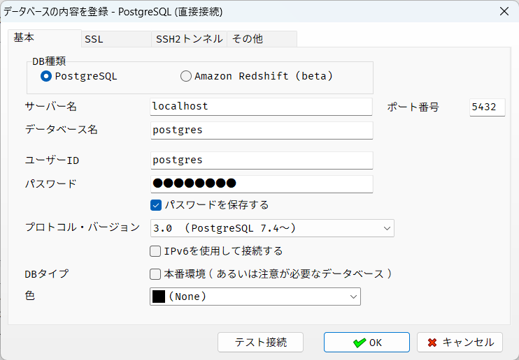
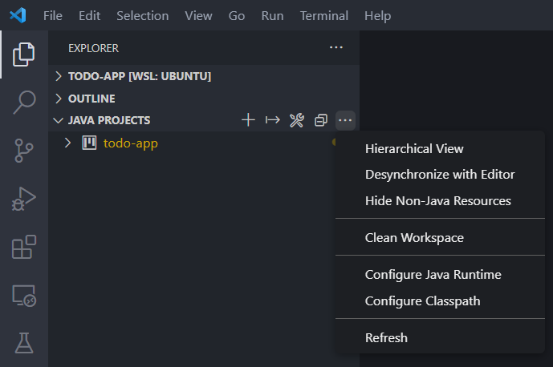

データベースを試そう
はじめに
データベースとは？
データを保存できるシステムです。
ウェブシステムでの役割は、データの保存場所になります。
ファイルと同じですね。ファイルとの機能の違いはなんでしょうか？
ファイルに ToDo を操作したことを思い出してください。
|
ファイル |
データベース |
| 同時編集 |
できない |
できる |
| 特定の行のみの読み込み・書き込み |
できない |
できる |
データって何？
表形式のデータを保存できる。
表形式のデータ？
RDB（リレーショナルデータベース）とは
種類は？
実行環境の構築
PostgreSQL を使う。
[プロジェクトを作ろう]のときと同じように、
- GitHubのplayground-todo をブラウザで表示する.
.(ドット)を入力する.todo-dockerを右クリックして Download ボタンをクリックする.- エクスプローラーのアドレスバーに
\\wsl.localhost\Ubuntu\home\%USERNAME%\my-todo を入力する.
| Windows Terminal |
|---|
| ❯ cd ~/my-todo/todo-docker # ダウンロードした`todo-docker`ディレクトリに移動する
❯ docker compose up --detach
|
- A5M2(Windowsアプリ)を起動する
- データベースの追加と削除 ＞ 追加 ＞ PostgreSQL
- 基本タブ
- デフォルトからの変更箇所は２つ
- ①パスワードに
postgresを入力する
- ②"パスワードを保存する"に✅を入れる）
- 
- データベース別名 ＞
localhost/postgres ＞ OK ＞ 閉じる
- 左側のエクスプローラーから
localhost/postgresを選ぶ
- そのまま接続
- Ctrl+Nで"新規ドキュメント" ＞ SQL を選ぶ
- 表示されたエディタに
| Query |
|---|
| CREATE TABLE IF NOT EXISTS todo(
yarukoto VARCHAR (100)
, kizitu DATE
);
|
- Ctrl+Homeでカーソルを先頭に戻す
- Ctrl+EnterでSQLを実行する
- "スキーマを再読み込み"をクリックする
- 完成！🎉
データベースの操作の基本
まず、データベースの操作をするにあたって新米エンジニアが覚えることは次の二つです。
- ツールの使い方（今回はA5M2）
- SQLの読み方・書き方
SQLは、データベースを操作することができる言語です。
Java を書いても実行環境がなければ動かせないのと同じように、
SQL を書いても実行環境がなければデータベースを操作することができません。
そこで、ツールの力を借ります。
[実行環境の構築]の準備でやった操作が基本になります。
- A5M2(Windowsアプリ)を起動する
- 左側のエクスプローラーから
localhost/postgresを選ぶ
- そのまま接続
- Ctrl+Nで"新規ドキュメント" ＞ SQL を選ぶ
- 表示されたエディタにSQLを入力する
- Ctrl+EnterでSQLを実行する
すべてを説明することはできないので、習うより慣れろ、とにかく動かそう
これからSQLの操作を説明します。SQLを書いたら同じやり方でSQLを実行してください。
テーブルの作り方
実は、[実行環境の構築]の最中にテーブルを作っています。
| Query |
|---|
| CREATE TABLE IF NOT EXISTS todo(
yarukoto VARCHAR (100)
, kizitu DATE
);
|
テーブルとは何でしょうか？
表形式のデータのことです。
このテーブルは、ToDoアプリで管理しているToDoクラスを保存できるよう、
yarukotoとkizituの二つのカラム(＝列のこと。column)を持っています。
VARCHAR (100)とDATEはなんでしょうか？
Java と同じように、データベースもデータ型の概念があります。
VARCHARは文字列、DATEはそのまま日付のデータになります。
Java のクラスと同じです。
| ToDo.java |
|---|
| package playground.todo;
import java.time.LocalDate;
public record ToDo(String yarukoto, LocalDate kizitu) {
}
|
2.3. 新しいテーブルの作成
テーブルにデータを追加しよう
| Query |
|---|
| INSERT
INTO todo(yarukoto, kizitu)
VALUES ('電話をかける', '2023-04-01');
INSERT
INTO todo(yarukoto, kizitu)
VALUES ('カレンダーを見る', '2023-04-02');
INSERT
INTO todo(yarukoto, kizitu)
VALUES ('テレビを見る', '2023-04-03');
|
2.4. テーブルに行を挿入
テーブルのデータを確認しよう
| Query |
|---|
1
2
3
4
5
6
7
8
9
10
11
12
13
14
15
16
17
18
19
20
21
22
23
24
25
26
27
28
29
30
31
32
33
34
35
36
37
38
39
40
41
42
43
44
45
46 | SELECT
*
FROM
todo;
-- SELECT 句
SELECT
yarukoto
, kizitu
FROM
todo;
-- WHERE 句 （文字列）
SELECT
yarukoto
, kizitu
FROM
todo
WHERE
yarukoto = '電話をかける';
-- WHERE 句 （日付）
SELECT
yarukoto
, kizitu
FROM
todo
WHERE
kizitu <= '2023-04-02';
SELECT
yarukoto
, kizitu
FROM
todo
WHERE
kizitu <= '2023-04-01';
-- ORDER BY 句
SELECT
yarukoto
, kizitu
FROM
todo
ORDER BY
kizitu ASC;
|
2.5. テーブルへの問い合わせ
テーブルのデータを更新しよう
| Query |
|---|
1
2
3
4
5
6
7
8
9
10
11
12
13
14
15
16
17
18
19
20
21
22
23
24
25
26
27
28
29
30
31
32
33
34
35
36
37
38
39
40
41
42
43
44
45
46
47
48
49
50
51
52
53 | UPDATE todo
SET
kizitu = '2023-04-01';
SELECT * FROM todo;
UPDATE todo
SET
yarukoto = '';
SELECT * FROM todo;
-- ALTER TABLE
ALTER TABLE todo ADD COLUMN id serial;
SELECT * FROM todo;
ALTER TABLE todo DROP COLUMN id serial;
SELECT * FROM todo;
ALTER TABLE todo DROP COLUMN id serial;
ALTER TABLE todo ADD CONSTRAINT pkey_todo_id PRIMARY KEY (id);
SELECT * FROM todo;
-- 順番が気持ち悪いので削除する
DROP TABLE IF EXISTS todo;
CREATE TABLE IF NOT EXISTS todo(
id serial PRIMARY KEY
, yarukoto VARCHAR (100)
, datetime TIMESTAMP WITH TIME ZONE
);
SELECT
id
, yarukoto
, datetime
FROM
todo;
-- x02_INSERT.sql を再度実行する
-- WHERE 句 & RETURNING 句
UPDATE todo
SET
yarukoto = '電話をかけなおす'
WHERE
id = 1 RETURNING *;
UPDATE todo
SET
kizitu = '2023-04-01'
WHERE
kizitu > '2023-04-02' RETURNING *;
|
2.8. 更新
テーブルのデータを削除しよう
| Query |
|---|
| DELETE
FROM
todo
WHERE
id = 1;
|
2.9. 削除
まとめ
データベースの操作は大きく分けて２つある
- テーブルを操作する
- データを操作する
"データを操作する"の基本は４つ
- データの追加
INSERT
- データの検索
SELECT
- データの更新
UPDATE
- データの削除
DELETE
| Query |
|---|
| CREATE TABLE IF NOT EXISTS todo(
id serial PRIMARY KEY
, yarukoto VARCHAR (100)
, kizitu DATE
);
|
プログラムからデータベースを操作する
次に、プログラム(Java)からデータベースを操作する方法を知りましょう。
素の Java ではデータベースを操作することができません。
Java がデータベースを操作するためには、 JDBCドライバが必要です。
JDBC ドライバは他のOSSと同様にbuild.gradleファイルに追記します。
| build.gradle.kts |
|---|
| dependencies {
// https://mvnrepository.com/artifact/org.fusesource.jansi/jansi
implementation("org.fusesource.jansi:jansi:2.4.0")
// https://mvnrepository.com/artifact/de.codeshelf.consoleui/consoleui
implementation("de.codeshelf.consoleui:consoleui:0.0.13")
// https://mvnrepository.com/artifact/org.postgresql/postgresql
implementation("org.postgresql:postgresql:42.6.0")
}
|
追加したらいったんクリーンアップ(Clean Workspace)しましょう。

サンプルコード
| TryDatabase.java |
|---|
1
2
3
4
5
6
7
8
9
10
11
12
13
14
15
16
17
18
19
20
21
22
23
24
25
26
27
28
29
30
31
32
33
34
35
36
37
38
39
40
41
42
43
44
45
46
47
48
49
50
51
52
53
54
55
56
57
58
59
60
61
62
63
64
65
66
67
68
69
70
71
72
73
74
75
76
77
78
79
80
81
82
83
84
85
86
87
88
89
90
91
92
93
94
95
96
97
98
99
100
101
102
103
104
105
106
107
108
109
110
111
112
113
114
115
116
117
118
119
120
121
122
123
124
125
126
127
128
129
130 | package playground.todo;
import java.io.IOException;
import java.sql.Connection;
import java.sql.Date;
import java.sql.DriverManager;
import java.sql.PreparedStatement;
import java.sql.ResultSet;
import java.sql.SQLException;
import java.sql.Statement;
import java.time.LocalDate;
public class TryDatabase {
private static final String URL = "jdbc:postgresql://localhost:5432/postgres";
private static final String USER = "postgres";
private static final String PASS = "postgres";
public static void main(String[] args) throws IOException, SQLException {
select();
var id1 = insert("yarukoto1", LocalDate.of(2022, 1, 1));
var id2 = insert("yarukoto2", LocalDate.of(2022, 2, 1));
var id3 = insert("yarukoto3", LocalDate.of(2022, 2, 2));
select();
update("yarukoto1UPDATE", LocalDate.of(2023, 1, 1), id1);
update("yarukoto2UPDATE", LocalDate.of(2023, 2, 1), id2);
update("yarukoto3UPDATE", LocalDate.of(2023, 2, 2), id3);
select();
delete(id1);
delete(id2);
delete(id3);
select();
}
public static void select()
throws IOException, SQLException {
System.out.println("start SELECT");
try (Connection conn = DriverManager.getConnection(URL, USER, PASS);
PreparedStatement ps = conn.prepareStatement("""
SELECT
id
, yarukoto
, kizitu
FROM
todo; """);
ResultSet rs = ps.executeQuery()) {
while (rs.next()) {
var id = rs.getInt("id");
var yarukoto = rs.getString("yarukoto");
var kizitu = rs.getDate("kizitu");
System.out.println("id=" + id + ", yarukoto=" + yarukoto + ", kizitu=" + kizitu);
}
}
}
public static int insert(String yarukoto, LocalDate kizitu)
throws IOException, SQLException {
System.out.println("start INSERT");
try (Connection conn = DriverManager.getConnection(URL, USER, PASS);
PreparedStatement ps = conn.prepareStatement("""
INSERT INTO todo (
yarukoto
, kizitu
) VALUES (
? -- parameterIndex = 1
, ? -- parameterIndex = 2
); """, Statement.RETURN_GENERATED_KEYS)) {
ps.setString(1, yarukoto);
ps.setDate(2, Date.valueOf(kizitu));
int count = ps.executeUpdate();
System.out.println("updated count=" + count);
ResultSet rs = ps.getGeneratedKeys();
if (rs.next()) {
int id = rs.getInt("id");
return id;
} else {
throw new RuntimeException("Failed to execute INSERT INTO todo.");
}
}
}
public static int update(String yarukoto, LocalDate kizitu, int id)
throws IOException, SQLException {
System.out.println("start UPDATE");
try (Connection conn = DriverManager.getConnection(URL, USER, PASS);
PreparedStatement ps = conn.prepareStatement("""
UPDATE todo
SET
yarukoto = ? -- parameterIndex = 1
, kizitu = ? -- parameterIndex = 2
WHERE
id = ? -- parameterIndex = 3; """)) {
ps.setString(1, yarukoto);
ps.setDate(2, Date.valueOf(kizitu));
ps.setInt(3, id);
int count = ps.executeUpdate();
System.out.println("updated count=" + count);
return count;
}
}
public static int delete(int id)
throws IOException, SQLException {
System.out.println("start DELETE");
try (Connection conn = DriverManager.getConnection(URL, USER, PASS);
PreparedStatement ps = conn.prepareStatement("""
DELETE FROM todo
WHERE
id = ? -- parameterIndex = 1; """)) {
ps.setInt(1, id);
int count = ps.executeUpdate();
System.out.println("updated count=" + count);
return count;
}
}
}
|
SELECT, INSERT, UPDATE, DELETE と、それを実行するためのサンプルコードです。
サンプルコードの解説をします。
データベースに接続する
SELECT, INSERT, UPDATE, DELETEのすべてのコードに共通するのは次の個所です。
どのデータベースに、どのユーザで接続するか？を指定しています。
得られたConnectionオブジェクトを使うことで指定したデータベースを操作することができます。
A5M2から操作するときも、まず初めにデータベースに接続していますよね。
それと同じです。
| TryDatabase.java |
|---|
| private static final String URL = "jdbc:postgresql://localhost:5432/postgres";
private static final String USER = "postgres";
private static final String PASS = "postgres";
try (Connection conn = DriverManager.getConnection(URL, USER, PASS);
|
SQL文をつくる (PreparedStatement)
SELECT, INSERT, UPDATE, DELETEのすべてのコードに共通するのは次の個所です。
| TryDatabase.java(select) |
|---|
| PreparedStatement ps = conn.prepareStatement("""
SELECT
id
, yarukoto
, kizitu
FROM
todo; """);
|
ConnectionにSQL(文字列)を渡してPreparedStatementにしています。
Java で SQL を実行するために、文字列の状態では実行できないからです。
Text Blocks
Text Blocksを使うと、文字列を複数行で書くことができる。
INSERT, UPDATE, DELETE の例も見てみましょう。
Text Blocks
| TryDatabase.java(insert) |
|---|
| PreparedStatement ps = conn.prepareStatement("""
INSERT INTO todo (
yarukoto
, kizitu
) VALUES (
? -- parameterIndex = 1
, ? -- parameterIndex = 2
); """, Statement.RETURN_GENERATED_KEYS)) {
|
| TryDatabase.java(update) |
|---|
| PreparedStatement ps = conn.prepareStatement("""
UPDATE todo
SET
yarukoto = ? -- parameterIndex = 1
, kizitu = ? -- parameterIndex = 2
WHERE
id = ? -- parameterIndex = 3; """)) {
|
| TryDatabase.java(delete) |
|---|
| PreparedStatement ps = conn.prepareStatement("""
DELETE FROM todo
WHERE
id = ? -- parameterIndex = 1; """)) {
|
SQL文は分かりますが、?(はてな)がついています。
これはなんでしょうか？
SQL文にパラメータをセットする
?(はてな)の正体はパラメータです。
プログラムからSQLを実行する場合、事前に登録する値を決められません。
そこで、プログラムから実行するときに値を設定できるように、パラメータ?(はてな)を使います。
では、どうやってパラメータをセットするのか？
UPDATEの例を見てみましょう。
| TryDatabase.java(update) |
|---|
| PreparedStatement ps = conn.prepareStatement("""
UPDATE todo
SET
yarukoto = ? -- parameterIndex = 1
, kizitu = ? -- parameterIndex = 2
WHERE
id = ? -- parameterIndex = 3; """)) {
ps.setString(1, yarukoto);
ps.setDate(2, Date.valueOf(kizitu));
ps.setInt(3, id);
|
PreparedStatementクラスには、set+データ型のメソッドが用意されています。
引数は、?(はてな)の番号とセットする値の二つです。
使い方は例を見れば一目瞭然です。
parameterIndex
じゃあパラメータが100個あったらいちいち数えるのか？
ミスったら全部やり直し？
しかもWHERE句とSELECT句で分かれてないのかよ。
ということまで想像できたらすごい。
実際の現場では、PreparedStatementを使ってデータベースを操作することはないと思います。
データベースを操作するためのライブラリ/フレームワークがたくさんあります。
SQLを実行する
SELECT と INSERT/UPDATE/DELETE で実行方法が違います。
SELECT はPreparedStatement#executeQueryで実行します。
| TryDatabase.java(select) |
|---|
| ResultSet rs = ps.executeQuery()) {
|
INSERT/UPDATE/DELETE はPreparedStatement#executeUpdateで実行します。
| TryDatabase.java(insert/update/delete) |
|---|
| int count = ps.executeUpdate();
|
２つの違いはなんでしょうか？
戻り値ですね。 SELECT はResultSet、 INSERT/UPDATE/DELETE はintです。
そもそもSQLのとして、SELECTの結果は該当する行の情報、
INSERT/UPDATE/DELETEの結果は影響を受けた行数です。
Java に限った話ではなく、 SELECT と INSERT/UPDATE/DELETE で実行結果が違います。
A5M2でも、 SELECT を実行すると、行の情報が画面下部に表示され、
INSERT/UPDATE/DELETE を実行すると、影響を受けた行数がコンソールに表示されますね。
SQLの実行結果を受け取る
SELECT では、 ResultSet に取得した行の情報が入っています。
ResultSet はまずListのような特徴を持ちます。
while文で取得した１行ずつを繰り返し処理します。
そしてMapのような特徴を持ちます。
ge+データ型のメソッドが用意されています。引数は列名になります。
| var id = rs.getInt("id");
var yarukoto = rs.getString("yarukoto");
var kizitu = rs.getDate("kizitu");
|
INSERT/UPDATE/DELETE では、影響を受けた行数が実行結果になるので、そのままintの戻り値がすべてです。
INSERT してできたレコードのID
INSERT してできたレコードのIDがほしいという場面があるでしょう。
いろいろ方法はあるみたいですが、
PreparedStatement に Statement.RETURN_GENERATED_KEYS を渡すPreparedStatement#getGeneratedKeys でデータを受け取る
方法が可もなく不可もなくって感じだったのでそうしました。
まとめ
- データベースに接続する(
Connection)
- SQL文を作る(
PreparedStatement)
- SQLにパラメータをセットする(
PreparedStatement#setXXX)
- SQLを実行する(
PreparedStatement#executeQuery / PreparedStatement#executeUpdate)
- 実行結果を受け取る(
ResultSet#getXXX)